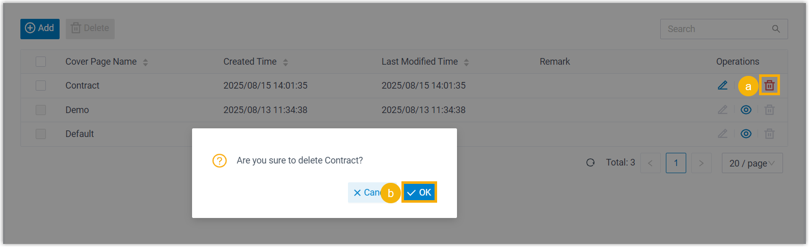
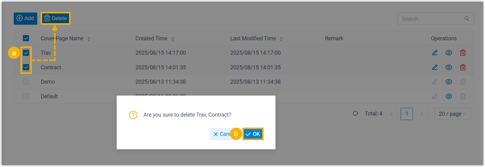

Delete Fax Cover Pages
For custom fax cover pages that are not in use, you can delete them from Linkus Desktop Client at any time.
Restrictions
You can delete your own custom fax cover pages, but cover pages configured by system administrator cannot be deleted.
Procedure
- Log in to Linkus Desktop Client, go to .
All the available cover pages are displayed in the list.
- Delete custom cover pages as needed.
Scenario Instruction Delete a cover page 
- On the right of the desired cover page, click .
- In the pop-up window, click OK.
Delete multiple cover pages 
- Select the checkboxes of multiple cover pages, click Delete.
- In the pop-up window, click OK.
Result
The fax cover page(s) are removed from your Linkus Desktop and Web Client.